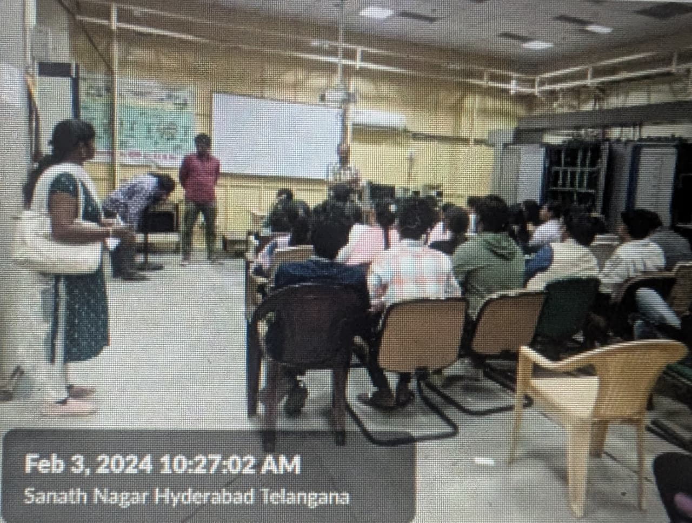

Out Reach
Bsnl Industrial Vist
Review:
Through an exploration of facilities and training tools, BSNL sought to provide students with a practical grasp of the
telecommunication infrastructure. It also provided the opportunity to explore BSNL’s operations and highlight its role in preserving
and growing the country’s telecom network.
THe first sessin is about the Telecommunication Networking by Mr. Ramesh from 10:00 A.M. to 11:15 A.M. During the discussion, they spoke about
communication channels, or transmission media. They addressed about a variety of data transmission techniques, including satellite and terrestrial
transmission, guided and unguided media and more. During the orientation, fundamentals of landline communications, including copper and fibre optic
connections were presented.

And the second session is about Battery and Power Connections by Mr. Krishna Reddy from 11:15 A.M. to 12:15 P.M.
The main topics of discussion at the session included current supply, different types of current, and how to connect mobile calls. The way battery’s
function and the relationship between plants and batteries.
In the third session it was about Networking lab by Mr. Prasanth, SDE from 12:00 P.M. to 1:00 P.M.
The focus of the session was on using a router for network access and communications. The process of accessing a router both locally and worldwide,
varieties of routers used by business users as well as individual users.
 And the last session is Networking lab by Mr. Prasanth, SDE from 12:00 P.M. to 1:00 P.M.
The focus of the session was on using a router for network access and communications. The process of accessing a router both locally and worldwide,
varieties of routers used by business users as well as individual users.
And the last session is Networking lab by Mr. Prasanth, SDE from 12:00 P.M. to 1:00 P.M.
The focus of the session was on using a router for network access and communications. The process of accessing a router both locally and worldwide,
varieties of routers used by business users as well as individual users.
To help students understand how RTTC, Hyderabad contributes to the skill development of telecom workers, and to introduce them to the training programs
offered by the center. It was intended to bridge the gap between academic understanding and real – world applications in the ever –
evolving telecom industry